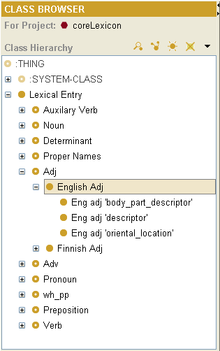
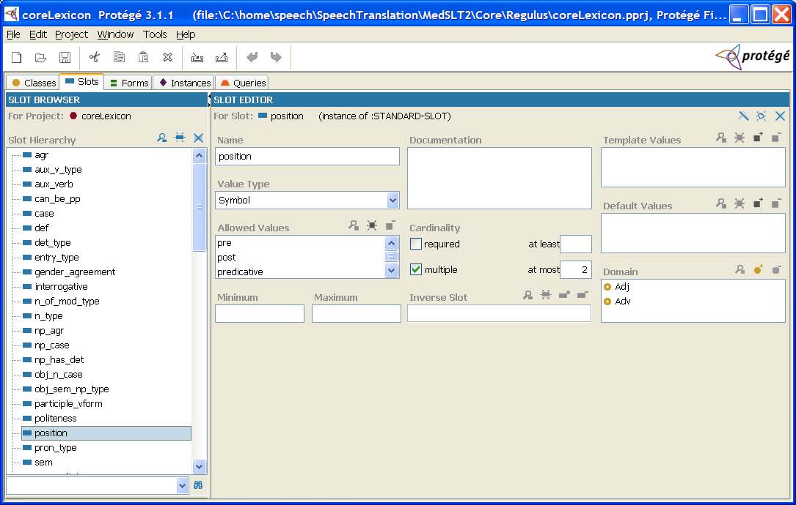
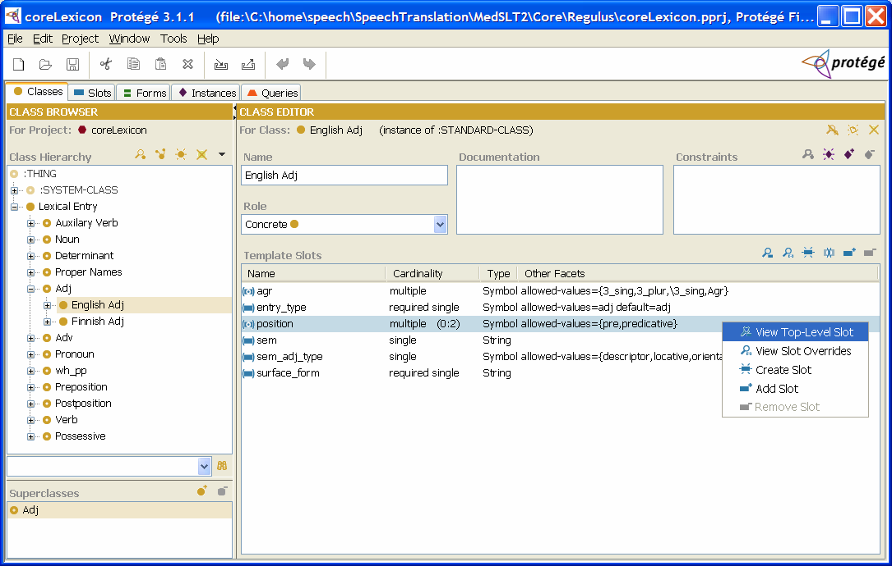
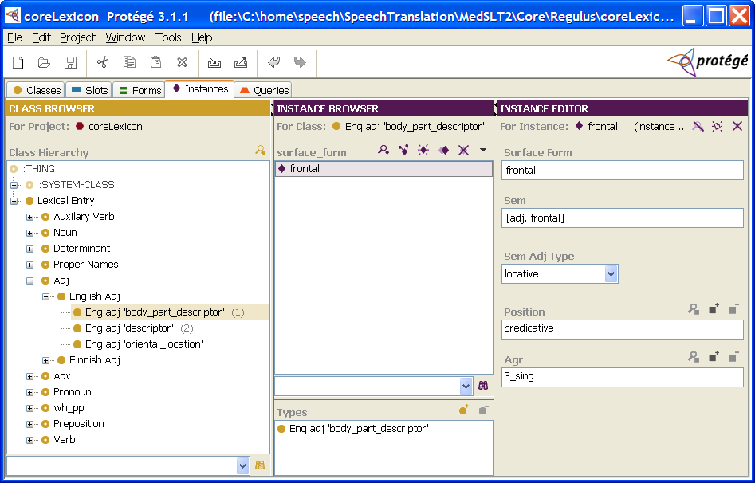

Introduction
The Protege Exporter Plugin lets you manage your lexical resources in an easy to use visual environment.
It helps you organising the lexical entries and achieving a uniform naming scheme across languages. Hence it facilitates the development of multilingual grammars. Adding lexical entries is easier done in Protégé's visual environment, since it hides prolog syntax.
Installation
- Download and Install Protégé. The Regulus Exporter Plugin has been tested on Protégé 3.1
- To install the Regulus Protégé Exporter, simply unzip the exporter archive to your Protégé plugins directory. In windows this is typically set to C:\Program Files\Protege_3.1\plugins.
Getting Started
Protégé Classes, Protégé Slots and Regulus Definitions
Protégé Classes
Download a toy lexicon package and unzip it to a directory of your choice. The template files contain one Protégé project, and a regulus exporter .rex file.
Open the Protégé project and get acquinted with the environment. Protégé has a class browser, which contains our definition of languages under a special class named "Lexical Entry".
Under the "Lexical Entry" class absract container classes (distinguishable by the donought shape) are placed. These are Regulus grammar declaration categories that correspond the lexical entry classes. In the example shown, abstract container classes include "Auxilary Verb", "Noun", ..., "Adj". These abstract classes are not language specific and act only as placeholders for language specific classes that are placed below.
In our example the abstract "Adj" container class contains language specific classes for English and Finnish. Subclasses placed under the "Adj" container have to be named, by convention, with the name of the language. If you want to add a more descriptive name, do so after a space character. In our example the classes are named "English Adj" and "Finnish Adj". "English Adj" includes also the sub-classes "Eng adj 'body_part_descriptor'", "Eng adj 'descriptor'" and "Eng adj 'oriental_location'".
The advantage of this kind of tree structure is that the language specific classes (sub-classes) inherit directly the features of more general classes (the upper classes). Hence in our example "Eng adj 'oriental_location'" directly inherits the features of "Eng adj", which then inherits the features of "Adj".
Remenber that completely equal class and subclass names are not allowed in this kind of ontological organisation. You have to always specify the language of the class, for instance subclasses of "Eng adj" are "Eng adj 'body_part_descriptor'" and "Fin adj 'body_part_descriptor'"; not only "adj 'body_part_descriptor".
Protégé Slots
Since classes are used to model Regulus Lexical Categories, we need a way to model Regulus Feautures. Regulus Features are modeled with Protégé Slots.
In our example the "position" slot is defined with allowed values "pre", "post" and "predicative". This correspond the Regulus grammar feature-value-space declaration "feature_value_space(position_value, [[pre, post, predicative]]).
"Position" is defined to have "Value Type" "Symbol", which lets us define list of allowed values for this category (like "pre", "post"). We can also define Boolean ("true", "false"), Integer and String values for categories.
The slot tab also lets us define restrictions on cardinality. They are enforced when adding lexical entries.
Our sample Adjective class uses this slot as shown below.
Default values, which are defined in the slot tab, may be overriden at classes. Right-click a class-specific slot to view and edit overriden values.
The structure contained in slots and classes is exported into regulus-readable files.
Important! Some differences between Regulus prolog grammar/lexicon feature-value and Protégé lexicon slot-values writing conventions:
- Agreement: Person-number-gender agreement is written in Protégé using underscores: 1_sing, 2_sing, 3_sing, 1_plur_fem, etc. The underscores are converted in slashes of prolog expressions used in Regulus grammars: 1/\sing, 2/\sing, 3/\sing, 1/\plur/\fem.
- yes-no value: Yes/no value used commonly for example as value of Inversion feature is expressed in Protégé with the Boolean (for "Value type" choose "Boolean"). Instead of "Yes/No" this prints out in Regulus file "true" or "false". Attention! Remember to define a default value in slot editor when creating the slot (either "true" or "false"). The default value is used when the value is left undefined.
Summary
- Protégé Classes correspond to Regulus Categories for lexical entries, which are defined in the declaration section of your regulus grammar.
- Protégé Slots correspond to Regulus Feautures that are defined in the declaration section of your regulus grammar.
- The subclasses inherit the features of upper classes.
- Language-Independent Slots can be removed, added and edited in Protégé's Slot Tab.
- Slot defaults may be overriden for specific languages at class level.
- The structure stored in the Protégé's Class and Slot tabs are saved into definition files.
Lexical Entries
Lexical Entries are added in Protégé's Instance tab.
Entries are placed under the corresponding language-specific category. Protégé's generates the Instance Editor (the tab on the right) based on the Class and Slot definitions of the particular entry. You may customize the appearance of the instance editor in the Protégé Form tab.
To avoid unnecessary clicking you can copy the instances and change for example just the case value of entry.
Another possibility is to modify Protégé .pins file.
To export your work to a regulus compatible format select File ->Export To Format->Regulus Dictionary. This will prompt you for a regulus exporter .rex file, which contains definitions on what, how, and where to export your lexicon and accompanying definitions. A sample .rex file is included with the toy lexicon package. For more information on setting up a .rex file see Configuration.
Voilà!
Configuration
The Regulus Exporter reads it's configaration from the regulus exporter file .rex. A sample file, along with documentation is given here.
Reserved Slot Names
By convention following slot names receive special treatment by the exporter:
- agr: The slot for agreeement is being expanded to regulus formalism
- entry_type: The entry type of the record under which the record gets exported, e.g. verb, noun, number, etc.
- surface_form: The form of the entry to export. This is usually written in the language's native script
- latin_transliteration: For languages with a non-latin script, this slot may contain a latin transliteration. This is usefull for people who can't understand the native script.
- gloss: This entry may contain the gloss for the record. This is usefull for demonstration purposes.
If a record contains non-empty gloss or latin_transliteration slots, it gets exported using the transliteration macro defined in the .rex file. An example of such an expanded entry is given below.
number:[sem=[[number, 1]]] --> @transliteration_macro('一', 'ichi', '1').In the example the entry_type of the exported entry was set to number. The entry contained non-empty gloss and latin_transliteration slots, which got exported in the @transliteration_macro. The surface_form of the entry is 一, the latin_transliteration is ichi, and the gloss is set to 1.
Regulus transliteration macros are defined by the gramar developer. A sample transliteration macro definition for Japanese, which only takes account of the latin transliteration would look as follows:
macro(transliteration_macro(KanaKanji, Romaji, Gloss), Romaji).Future Plans
- This is a first step towards integrating lexical and semantic representation. Future releases will address this.
- Synonym extraction using WordNet.
Known Limitations
- You can't directly import an already developed Regulus lexicon into Protégé.